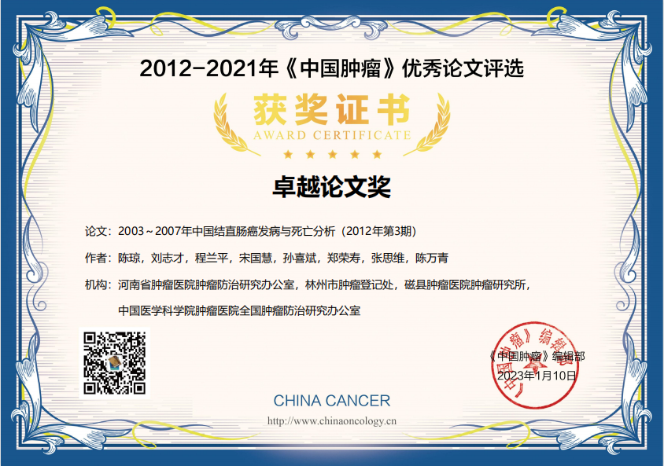

多舛的2022年终于过去了，2023年也伴随着一次全民的新冠感染重磅出场。本想着2023年还是像以往一样，单调、乏味，但是生活还是给了我一个小惊喜。

2023年1月12日我收到了《中国肿瘤》发来的email，说我得到了杂志社颁发的“卓越论文奖”的奖项。收到这个email心里还是非常高兴的，比以往获得的任何奖励都高兴。
首先，高兴来自于“未知”，以往也得到过一些小小的荣誉，比如什么”肿瘤防控先进个人”、“全国肿瘤登记先进个人” 等，但是这些荣誉都是通过申请得来的，也就是说需要向颁发单位申请，说明你做了哪些工作，取得了哪些成绩等等，得到了这个荣誉之后也没有了太多的兴奋和高兴。但是这次不一样，这个奖项没有经过这些申报程序，得到这个消息时，还是感到意外和惊喜。
其次，高兴来自于”用心“，这个将项的评审杂志社还是挺用心的。首先，通过“论文引用量”这个定量指标对论文进行初步的定量评价，然后再通过专家对论文盲审从而进行定性评价，最后评选出各级别的奖项，所以杂志社是在用心组织评选论文的，收到这个将项还是很有满足感的。
同时，高兴还来自于“回忆”，这个篇论文是我刚参加工作的第二年写的，是我参加国家肿瘤防治研究办公室的一项工作的产出，这项工作是编写全国2003-2007年恶性肿瘤发病死亡报告，这项目工作是全国第一次5年合计的恶性肿瘤发病死亡报告，所以还是有非常重要的意义的。
当我打开Email看到是关于这项工作的内容时，思绪也一下回到了10年前。那时，我刚参加工作，对未来充满憧憬，也对一切都很感兴趣，希望学习新东西。打开Email使我回忆起了10年前的失落和美好，也回忆起了那时的一些人和事儿。这些突然来的一些记忆就变得很美好。
高兴劲儿过去之后，沉下心来想想为什么能得到这个奖项。其实并不是这篇论文写的有多么的好，而是论文提供的数据是当时研究者们比较关注的内容。10年前是中国生活方式相关的肿瘤发病率抬头开始上升的阶段，研究者们也非常希望获取相关的信息。
能够得到这个奖励，我还是要感谢一下国家肿瘤防办的老师能让我参与这个项目，感谢孙主任对论文写作的指导，感谢杂志社的鼓励，今后要戒骄戒躁，沉下心来，继续努力。